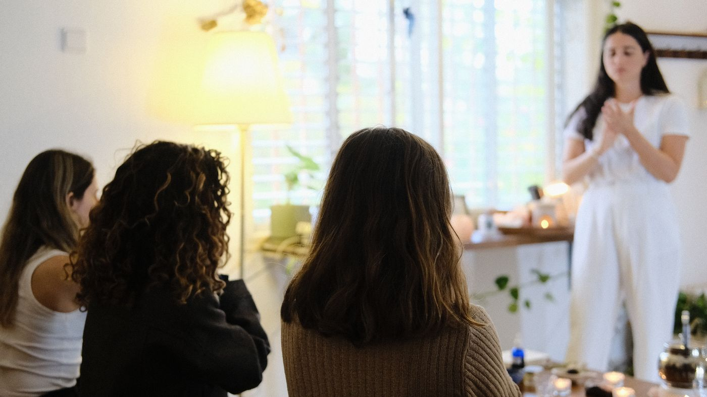
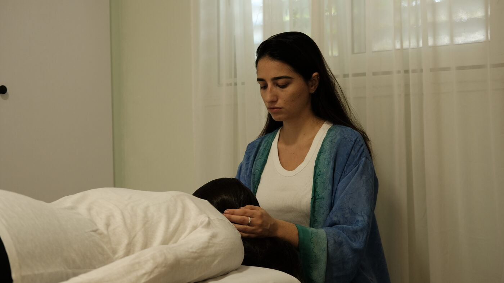
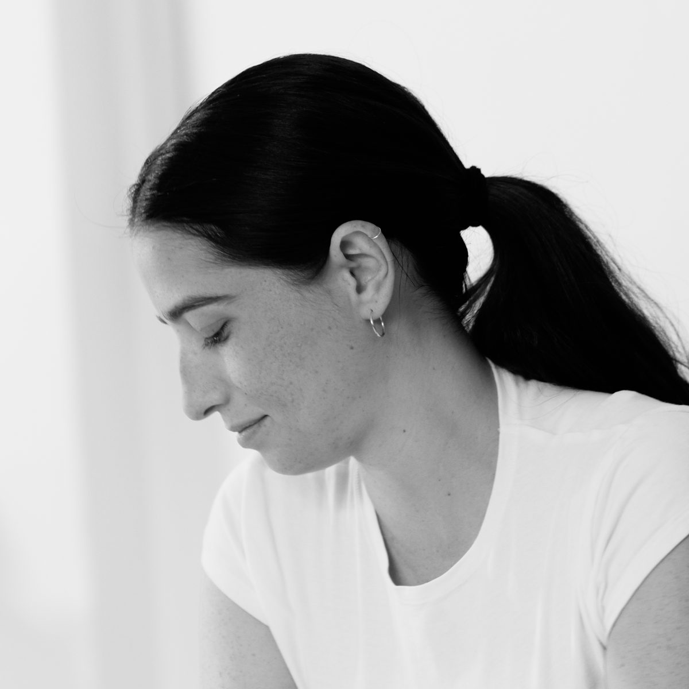
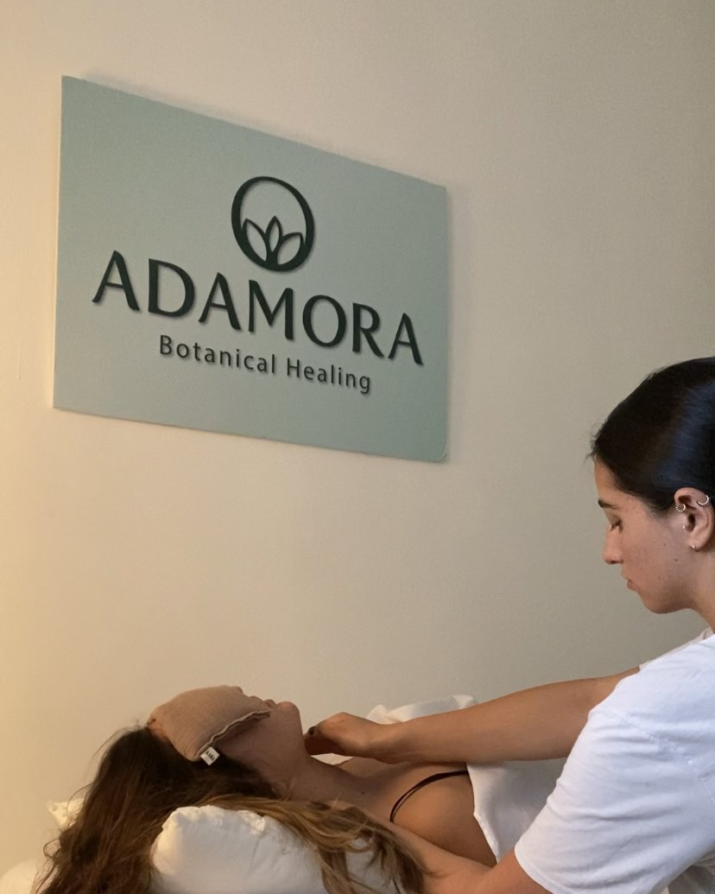
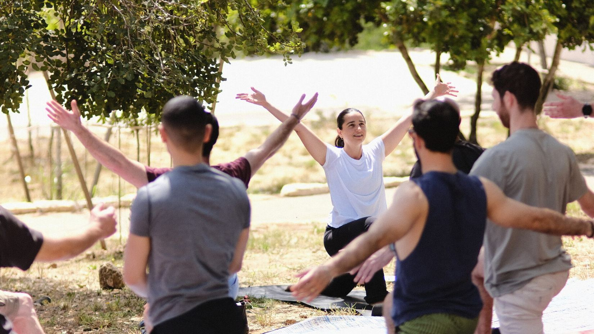
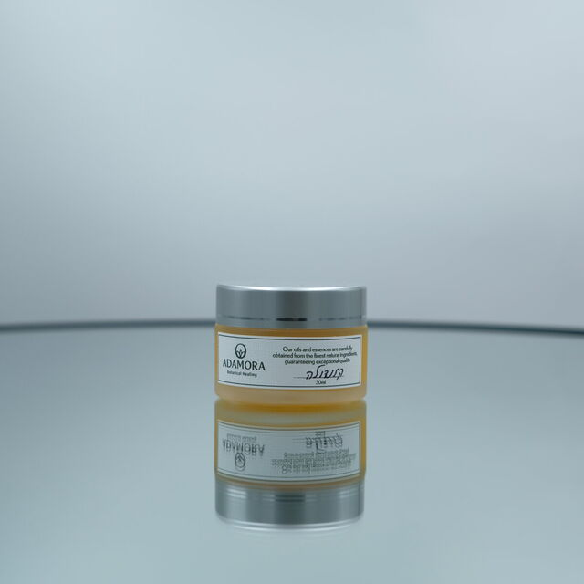

סדנה לקבוצה
קבוצה של חברות, משפחה, צוות או ארגון. אנחנו קובעות יחד מתי ואיפה — אצלי או אצלכן — ואני מגיעה עם כל הציוד.
לכל הסדנאותאדמה · אור · אהבה
בין אם ניפגש בקליניקה לטיפול נטורופתי ומגע, על המזרן בשיעורי יוגה ותנועה, או בסדנאות רוקחות טבעית ומיינדפולנס ברחבי הארץ – המטרה שלי היא לעזור לך למצוא את האיזון המדויק שלך, ולהרגיש בבית בתוך הגוף שלך.

קבוצה של חברות, משפחה, צוות או ארגון. אנחנו קובעות יחד מתי ואיפה — אצלי או אצלכן — ואני מגיעה עם כל הציוד.
לכל הסדנאות
טיפול שמותאם אישית לצרכים שלך, לפי הסיבה שהביאה אותך. אנחנו מתחילות בשיחה טלפונית מקדימה, ומשם בוחרות יחד את הדרך.
לנשים, בקליניקה ובזום.

המסע שלי החל בשנת 2016, כשאובחנתי עם מחלת קרוהן. קיבלתי את התווית ״מחלה כרונית״, יחד עם המרשם הקבוע לשיכוך כאבים. משהו בתוכי התחיל לשאול — האם יש דרך אחרת?
המסע לריפוי הוביל אותי לחקירה עצמית, למידה מקצועית ואל עולמות הנטורופתיה והיוגה. גיליתי את העוצמה שבשילוב בין משאבי הטבע, מסורות רפואה עתיקות, ובעיקר — אמונה וחמלה עצמית.
לסיפור המלאהטיפול מתחיל בשיחה טלפונית מקדימה. לפני שנפגשות, אנחנו מדברות — כדי להבין מה הביא אותך ומה מתאים לך. משם בוחרות יחד את הטיפול. לנשים, בקליניקה בתל אביב ובעמק האלה, וגם בזום.
לעמוד הקליניקה

היוגה לימדה אותי להיות נוכחת, לנשום ולהרפות.
בשבילי יוגה היא לא אימון, אלא תרגול — אני והמזרן, הגוף והנפש.
משחות, שמנים, קרמים ומארזים שאני רוקחת בעבודת יד. מכיוון שכל המוצרים נרקחים מחומרים טבעיים, צמחי מרפא ושמנים אתריים פעילים, חשוב לי לוודא שמה שבחרת מתאים בדיוק לך. הרכישה מתבצעת בשיחה אישית – טופס קצר, ואני יוצרת קשר להתאמה.



אני מקבלת בשתי קליניקות — בתל אביב ובעמק האלה. חלק מהמפגשים מתקיימים גם בזום, כך שאפשר להצטרף מכל מקום. סדנאות אני מעבירה במקום שנקבע מראש — אצלי או אצלכן, בכל הארץ.
סקרנתי אותך? מוזמנת ליצור איתי קשר
לשיחה בוואטסאפ